Ce petit laser à rubis à été réalisé en quelques heures avec du matériel que j'avais en stock depuis près de 47ans! Le but est de faire avec cette cavité réflectrice que j'avais reçu gracieusement de la maison SCHOTT-JENAer GLASS GmbH en 1969 différents agencement de laser à rubis. L'avantage majeur de ce type de réflecteur est de concentrer uniquement les longueurs d'ondes utiles au pompage du rubis et de ne pas concentrer le rayonnement infrarouge qui échauffe le rubis inutilement. Le rendement de pompage est 4 à 5 fois plus efficace qu'un pompage par tube flash hélicoïdale.
Plusieurs agencement vont être réalisés : mode relaxé ( 2-3 ms) ,mode déclenché avec filtre SCHOTT RG695 (20ns), mode déclenché +miroir rotatif (8ns), mode déclenché avec colorant saturable comme vert de Malachite ou Cryptocyanine (15ns), mode déclenché miroir rotatif uniquement (50ns), modes blockés (20ps)
Le déclenchement du laser à rubis par un filtre SCOTT RG695 se comportant comme un absorbant saturable. Lors du pompage optique dès que le rubis atteint le seuil laser (système à 3 niveaux) c'est à dire que la moitié des ions de chrome sont excités, alors il faut évité que le rubis se mette à laser on bloque le résonateur de manière que l'inversion de population augmente à son maximum. Pour cela on utilise un absorbant saturable qui empêche que l'onde laser s'amplifie lors des passages successifs. Ceci permet d'obtenir une inversion de population plus importante et de générer une impulsion géante !
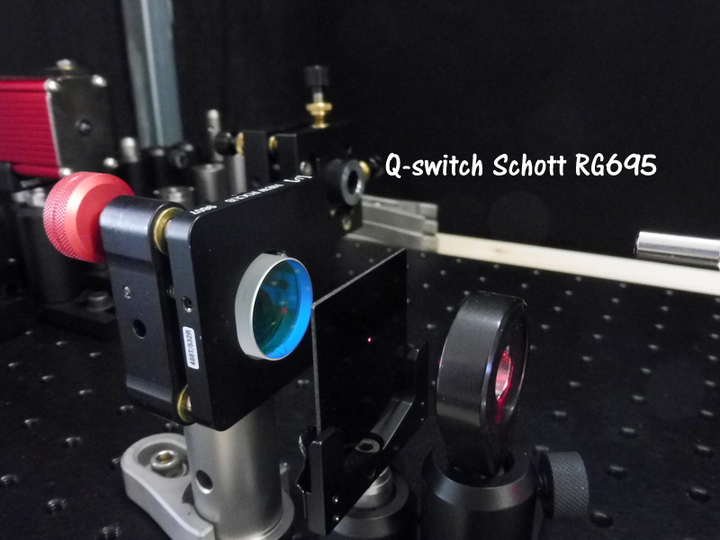
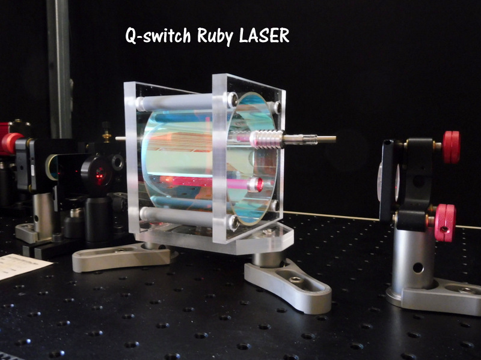
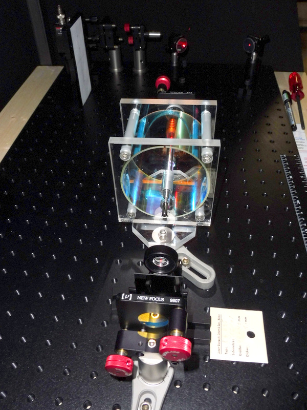
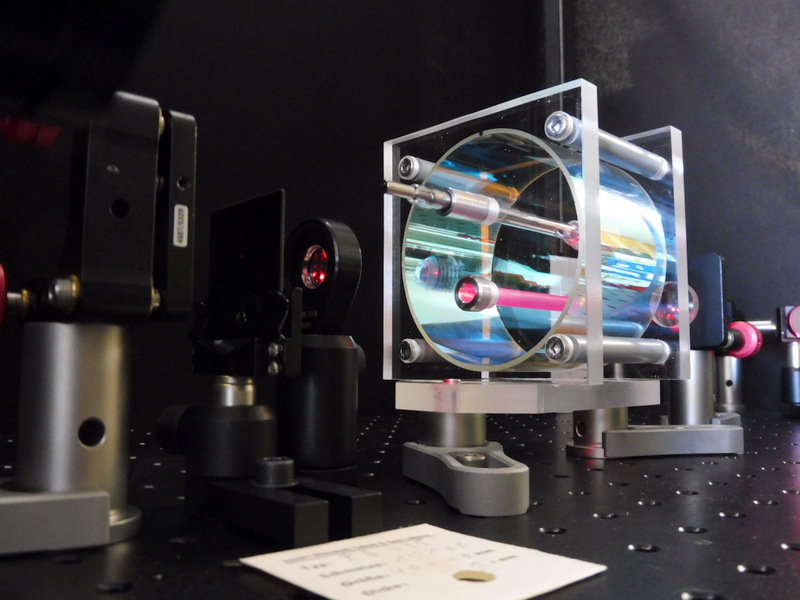
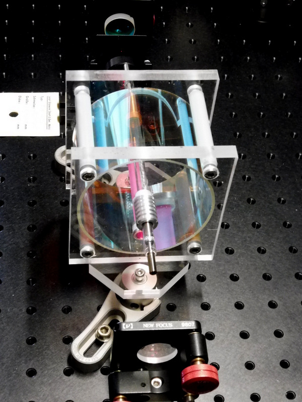
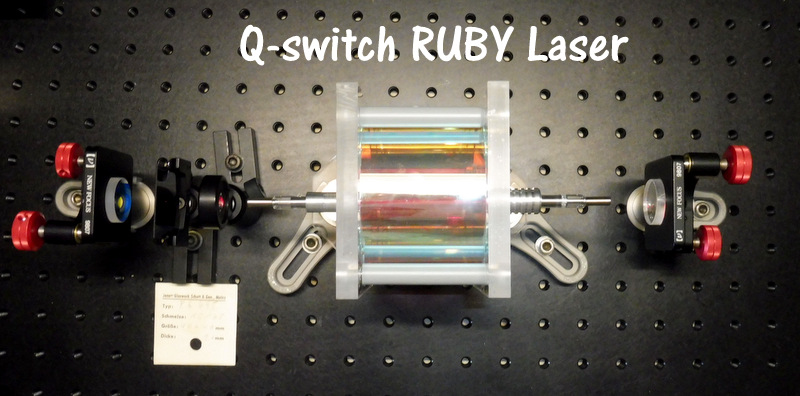
TRAVAIL EN MODE RELAXE La première opération consiste à pourvoir le tube flash d'une batterie de condensateur. La durée de fluorescence pour le rubis est de 3 millisecondes donc une durée de décharge de 1 milliseconde est une bonne valeur qui permet une durée de vie du tube flash plus longue pour une énergie donnée. Un autre avantage est de pouvoir utiliser des condensateurs électrolytique qui présentent une grande inductance interne et une grande énergie de stockage pour un volume réduit. Comme le laser n'est pas pourvu d'un refroidissement et qu'une fréquence de répétition de 1 pulse par minute convient parfaitement à ce type de condensateur. Le tube flash 043-13-m122889 dont je ne connais pas les caractéristiques, mais que je peux comparer à un model de même longueur d'arc 100mm et de diamètre 7/6mm. L'énergie d'explosion d'un tube similaire pour une décharge de 1ms est de 2400 Joules ! L'énergie de décharge pour une durée de vie de 1000 pulses est de 45% Eexpl pour 10'000 pulses 35% pour 105 pulses de 27% et 20% pour 106 pulses. Détermination du banc de condensateurs électrolytique, de la tension de charge et de la self avec le calculateur FENIX
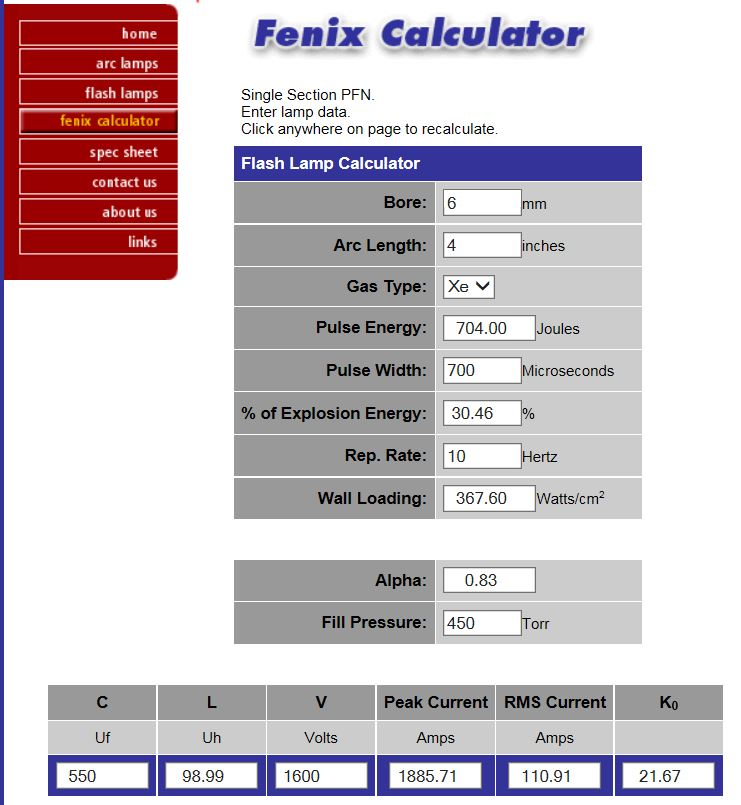
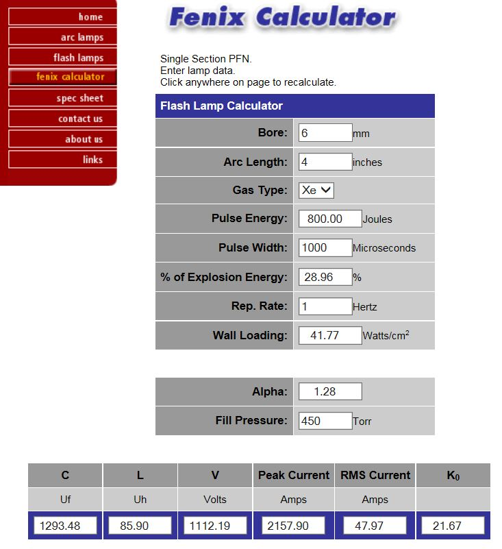
Dans mon stock de matériel j'ai trouvé un petit banc de 8 condensateurs électrolytiques de 2200uF /450V relier entre eux pour former une capacité de 550uF sous 1800 V. Ils sont reliés en 2 groupes parallèles de 4 condensateurs en séries.
Le rubis dopé à 0.035% Cr+3 de diamètre 7mm et 70mm de longueur peut stocker une énergie de 2.18J/cm3 donc une énergie en mode relaxé au mieux de 5.3J. Le seuil de pompage en réflecteur elliptique est de 100J/cm3 soit 270J ! Maintenant la préparation du banc de condensateurs électrolytique et de la self et mesure du temps de décharge au moyen d'une photodiode au silicium avec un filtre atténuateur.
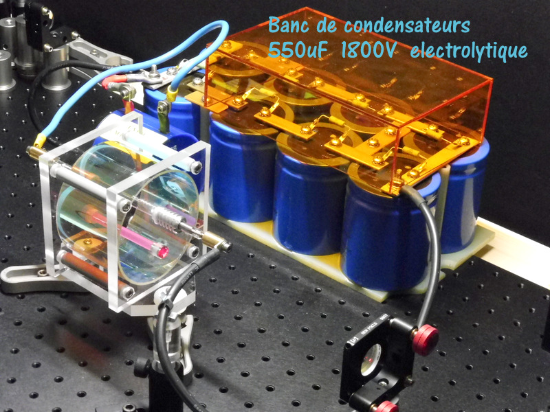
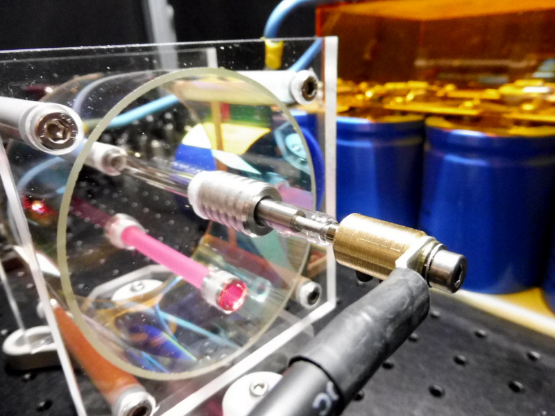
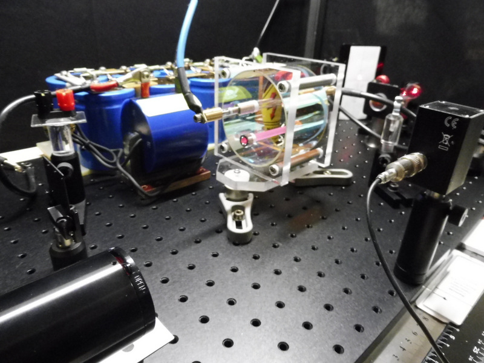
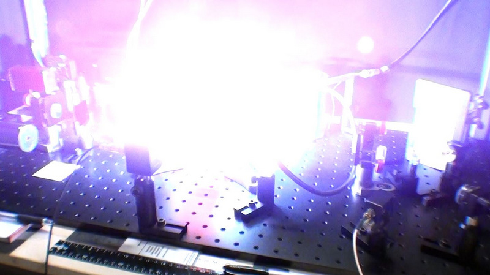
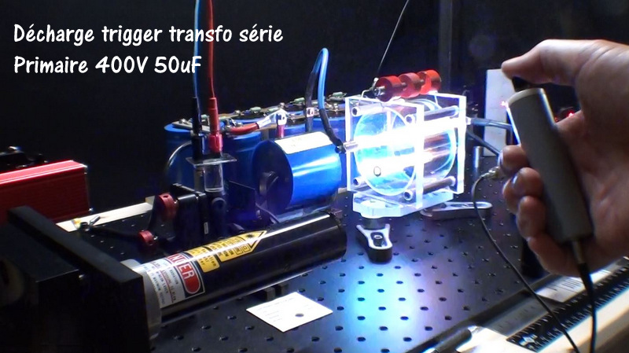
Mesure de la durée de l'éclair flash au moyen d'une photodiode et d'un oscilloscope Tektronix 7704
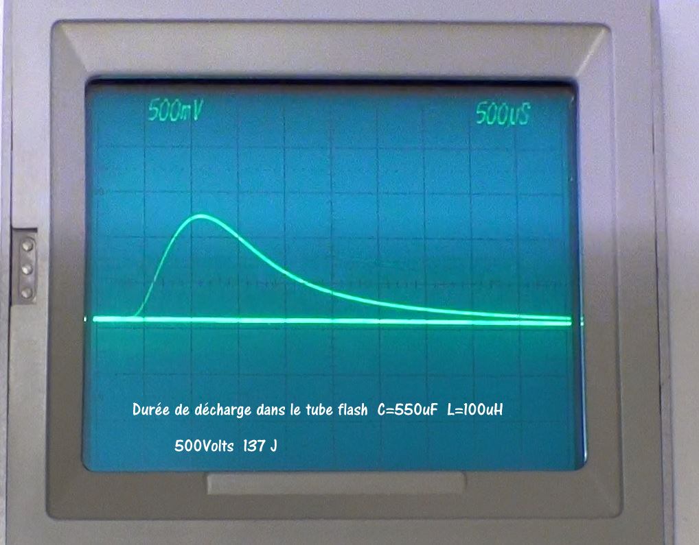
Avec ce banc de condensateur électrolytique d'une capacité équivalente de 550uF et un transfo série d'allumage du tube flash qui présente une inductance de 100uH la durée de l'éclair flash est de 1,2ms à mi-hauteur ce qui est une bonne valeur pour le pompage du rubis qui à une durée de fluorescence de 3ms.
Sur la photo ci-dessous on vois des restes de fluorescence du rubis à environ 50ms après la fin du pompage flash !